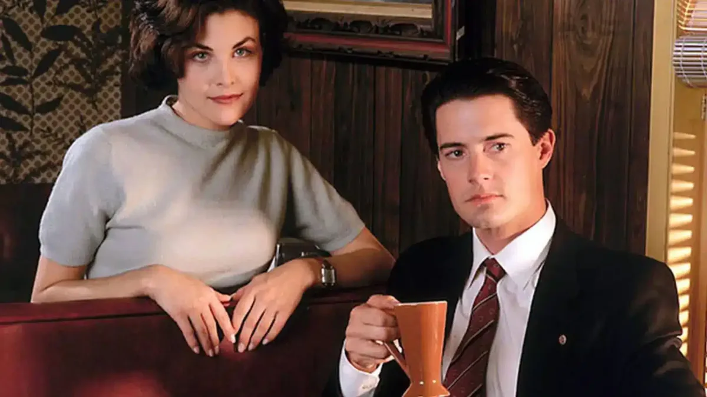
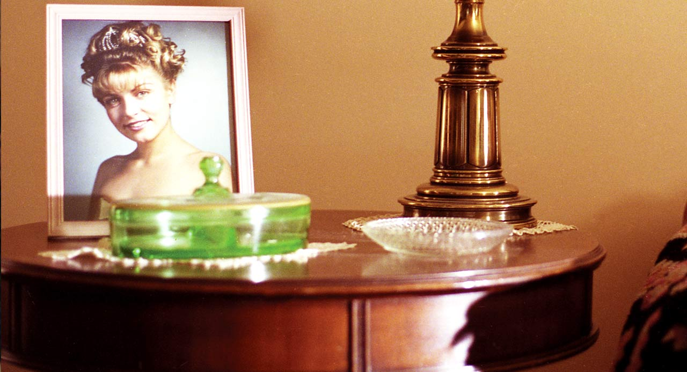

Tres regresos
Temporadas
Un pueblo que parece el mismo hasta que alguien se atreve a observarlo con atención.

1990
Temporada 1
La muerte de Laura Palmer lleva a Dale Cooper a Twin Peaks. La investigación descubre secretos familiares, rivalidades y un dolor que el pueblo había preferido no nombrar.
- Episodios
- 8
- Centro
- El caso Laura Palmer
1990–1991
Temporada 2
Las consecuencias de la investigación expanden el mapa de Twin Peaks. Nuevos vínculos, negocios y amenazas hacen que el misterio alcance una dimensión más oscura.
- Episodios
- 22
- Centro
- Lo que permanece oculto


2017
Twin Peaks: The Return
Veinticinco años después, el relato abandona cualquier comodidad. Cooper, sus dobles y las heridas del pasado cruzan ciudades, dimensiones y tiempos con una libertad radical.
- Partes
- 18
- Centro
- El retorno y sus ecos